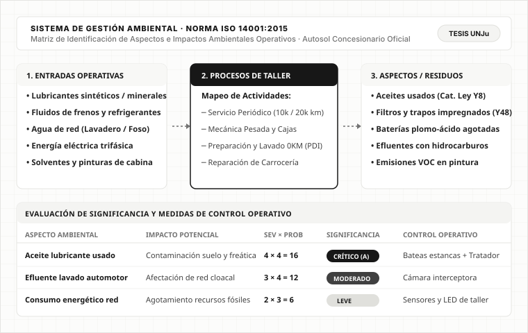

Ingeniería Industrial · Sustentabilidad · UNJu
Propuesta metodológica en desarrollo (Tesis)
Tesis de Ingeniería Industrial — Sistema de Gestión Ambiental ISO 14001
Problema resuelto: Mapeo integral y control de aspectos ambientales críticos (lubricantes usados, baterías agotadas, efluentes de lavadero y residuos peligrosos de posventa) en operaciones reales de Autosol Jujuy. Propuesta metodológica en desarrollo para estructurar la matriz técnica hacia una futura certificación bajo norma ISO 14001:2015 (no implementado ni certificado actualmente).

Matriz técnica de identificación y evaluación de aspectos ambientales en taller